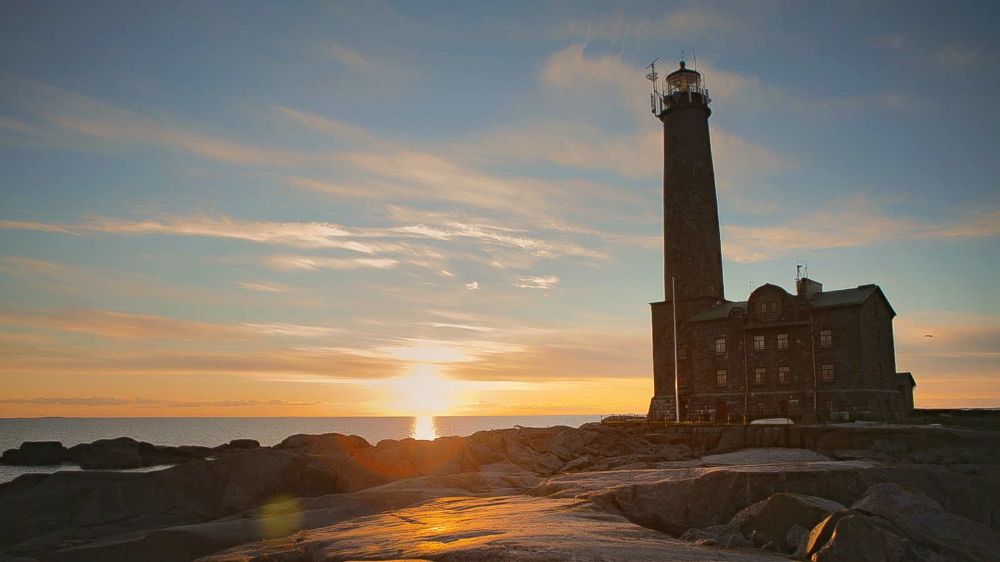
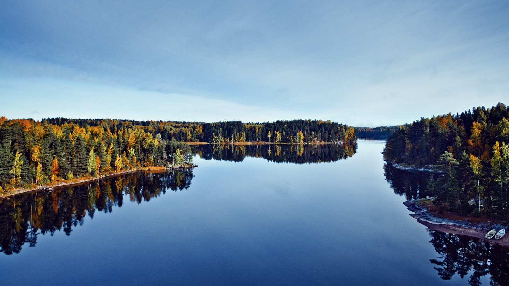
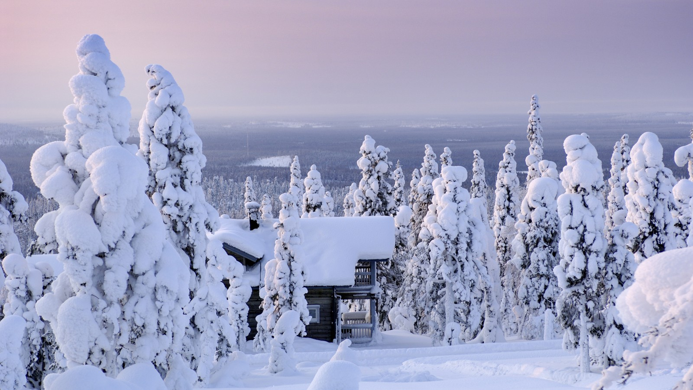
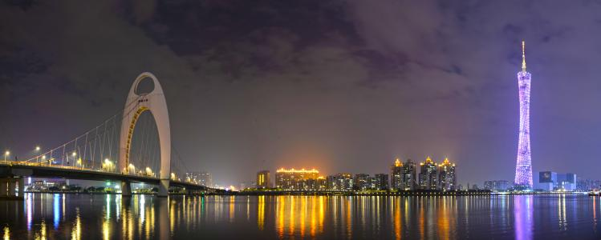

- 
- 
- 

- 
- 芬兰 Finland
- 芬兰 Finland
- 芬兰 Finland
- 重庆 Chongqing
- 广州 Guangzhou
- 芬兰群岛
- 芬兰湖区
- 拉普兰雪景
- 重庆洪崖洞夜景
- 广州"小蛮腰"
对于那些向往着有朝一日来到冬季童话世界的人来说，芬兰的拉普兰无疑是个梦想成真的地方。每当夏季24小时的阳光取代了冬季的漫漫长夜，那种强烈的反差也吸引着远远近近的游客。寂静的荒原、热闹的城镇、熙熙攘攘的滑雪胜地…这些元素全都相隔不远。
湖泊、岛屿、河流和运河组成的蓝色迷宫，其间穿插着森林和山脊，绵延数百公里，宁静而绝美。欢迎来到欧洲最大的湖区。这，就是芬兰湖区。
芬兰海岸线上有着世界上最大的群岛。木建筑老镇，灯塔，历史悠久的庄园和石教堂，绵延到陆地和海洋的大型国家公园——这些，便是芬兰沿海的概况。 岛上人家闲散的生活和浓重的海洋文化气息，是本地区的重要特色。芬兰首都赫尔辛基同样散发着海滨城市的魅力。海滩、手工艺品集市、小镇文化活动、咖啡馆、乡村小店——芬兰滨海城镇在夏季里尤其生机盎然。 芬兰有七处联合国教科文组织确定的世界自然/文化遗产，其中三处位于沿海地带，静候您的到来。
洪崖洞是重庆历史文化的见证和重庆城市精神的象征。洪崖洞民俗风貌区位于重庆市渝中区。北临嘉陵江，南接解放碑沧白路，项目沿江全长约600米，商业建筑总面积逾60000平米，以最具巴渝传统建筑特色的“吊脚楼”风貌为主体，依山就势，通过分层筑台、吊脚、错叠、临崖等山地建筑手法，把餐饮、娱乐、休闲、保健、酒店和特色文化购物等六大业态有机整合在一起，形成了别具一格的“立体式空中步行街”，成为最具层次与质感的城市景区商业中心。
广州塔是一座集旅游观光、餐饮、文化娱乐和环保科普教育等多功能于一体，具有丰富文化内涵的大型景观建筑,她矗立在广州城市新中轴线与珠江景观线的交汇处，与海心沙亚运公园和珠江新城隔江相望，是广州新的制高点。她在鳞次栉比的中国超高建筑中独占魁首，其塔体高约450米，天线桅杆高150米，以总高度600米占据世界第一至高电视塔的地位。